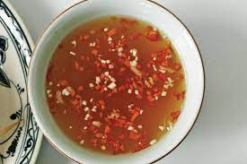

Nước chấm

Ingredients
- 10 birds eye chilis
- 5 garlic cloves
- 1.5 Tbsp white sugar
- 2 Tbsp Lime Juice
- 2.5 Tbsp Fish Sauce
- Hot Water
Steps
- In a mortar and pestle, pulverize garlic until crushed
- Add chilis and continue pulverizing until it becomes a paste
- Add white sugar and mix in lime juice, fish sauce and hot water until fully incorporated